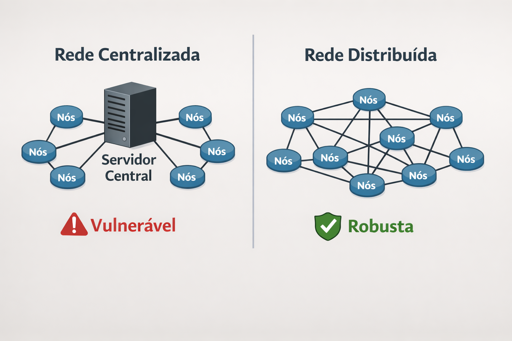
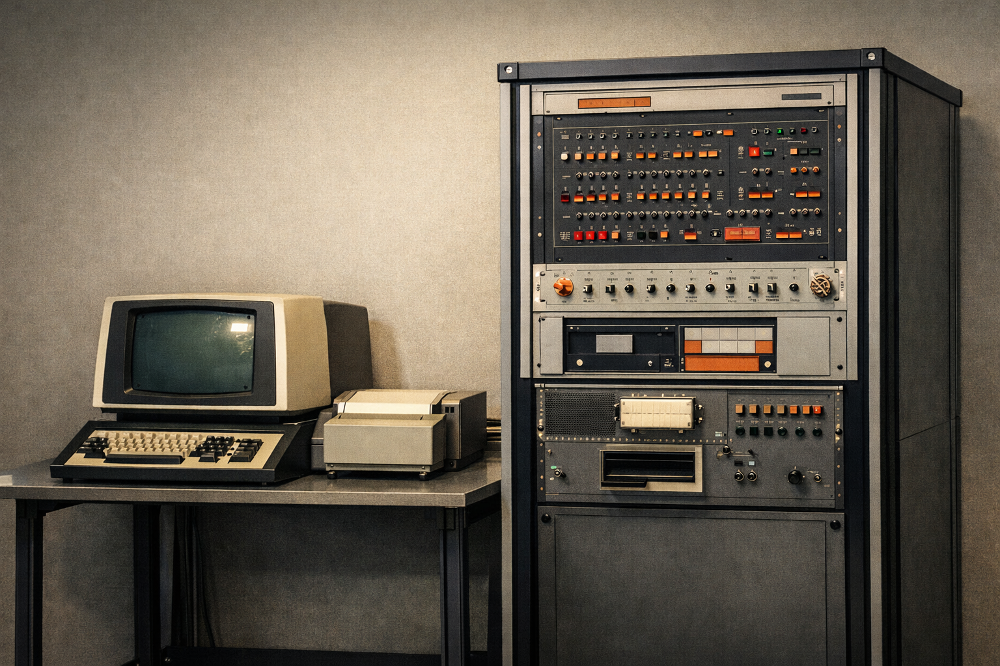
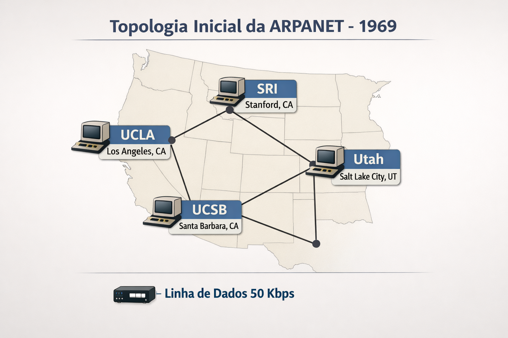
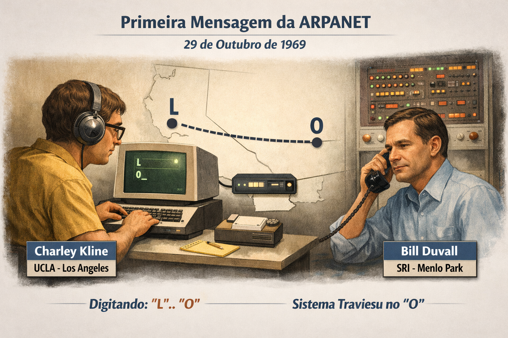
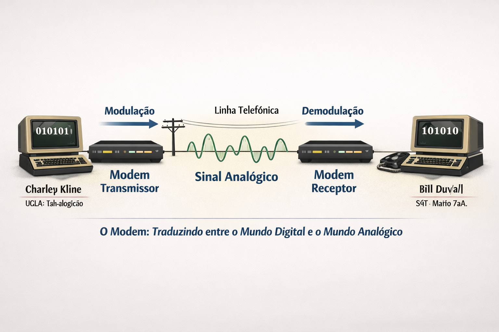
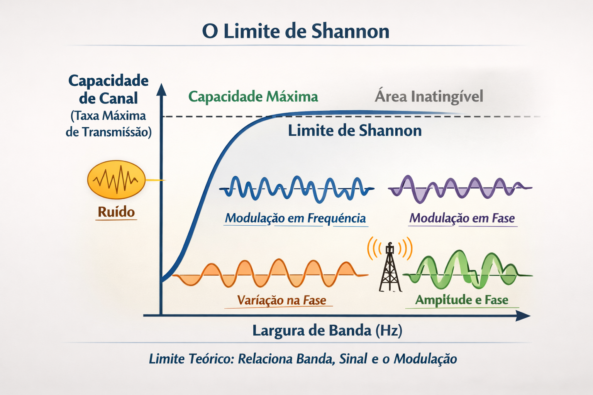

Infraestrutura Física de Redes
AULA 02 — Como as Redes Nasceram: da Guerra Fria à Internet
1. O Contexto Histórico — A Faísca
Para entender por que as redes de computadores foram inventadas, é preciso voltar a 4 de outubro de 1957.
Nessa data, a União Soviética lançou o Sputnik — o primeiro satélite artificial da história. Para o mundo ocidental, e especialmente para os Estados Unidos, o impacto foi de choque profundo. O raciocínio era direto: se os soviéticos conseguiam colocar um objeto em órbita ao redor da Terra, tinham capacidade técnica para lançar mísseis balísticos intercontinentais com ogivas nucleares.
O presidente Dwight Eisenhower respondeu em fevereiro de 1958 criando a ARPA — Advanced Research Projects Agency — uma agência federal ligada diretamente ao Departamento de Defesa dos EUA, com missão explícita: garantir superioridade tecnológica americana através de pesquisa de alto risco e alto impacto.
Uma das questões colocadas imediatamente à ARPA foi: como garantir comunicações militares que sobrevivam a um ataque nuclear?
O sistema de telecomunicações existente tinha um defeito fatal: era centralizado. Funcionava como uma estrela — tudo passava por pontos centrais de comutação. Destruir esses pontos destruía a comunicação. Um único míssil bem posicionado poderia paralisar toda a cadeia de comando militar.
"É possível construir uma rede de comunicações que continue funcionando mesmo que parte dela seja destruída?"
Essa pergunta militar, feita por razões de sobrevivência em contexto de guerra, gerou — inadvertidamente — a tecnologia que conectaria o mundo inteiro.
2. Os Idealizadores
J.C.R. Licklider — O Visionário
Joseph Carl Robnett Licklider (1915–1990) era psicólogo e cientista da computação no MIT. Em agosto de 1962 escreveu um memorando interno chamado "On-Line Man-Computer Communication", onde descrevia uma "Intergalactic Computer Network" — uma rede global onde qualquer pessoa poderia acessar dados e programas de qualquer computador do mundo.
Era uma visão radicalmente à frente do seu tempo. Em 1962 sequer existia a ideia de conectar dois computadores — Licklider estava falando em conectar todos os computadores do planeta. Naquele mesmo ano foi contratado pela ARPA para dirigir o IPTO (Information Processing Techniques Office), o departamento que financiaria toda a pesquisa subsequente.
Licklider não construiu a ARPANET. Ele plantou a ideia e colocou as pessoas certas nos lugares certos.
Paul Baran — O Arquiteto Conceitual
Paul Baran (1926–2011) era engenheiro na RAND Corporation, contratado pelo Departamento de Defesa. Entre 1960 e 1962 produziu uma série de 11 relatórios técnicos respondendo diretamente ao problema levantado pela ARPA.
Sua proposta tinha dois pilares fundamentais:
Rede distribuída: em vez de uma topologia em estrela (centralizada) ou em árvore (hierárquica), Baran propôs uma malha onde cada nó se conecta a vários outros. Destruir qualquer nó não isola os demais — existem sempre caminhos alternativos.

Comutação de pacotes: em vez de reservar um circuito dedicado entre dois pontos para toda a duração de uma comunicação (como funcionava o sistema telefônico), Baran propôs quebrar a mensagem em blocos independentes que viajam separadamente pela rede e se remontam no destino.
O Departamento de Defesa recebeu os relatórios, achou a ideia interessante — e não fez nada por anos. A AT&T, consultada sobre viabilidade, declarou que a comutação de pacotes era tecnicamente impossível.
Donald Davies — O Inventor Paralelo
Donald Davies (1924–2000) era cientista do NPL (National Physical Laboratory) no Reino Unido. Entre 1965 e 1966, sem ter conhecimento do trabalho de Baran, chegou independentemente às mesmas conclusões sobre redes distribuídas e comutação de pacotes.
Foi Davies quem cunhou o termo "packet switching" — comutação de pacotes — que é usado até hoje. Seus trabalhos chegaram aos engenheiros americanos e influenciaram diretamente o design técnico da ARPANET. Em 1969 o NPL operou a primeira rede local experimental com comutação de pacotes do mundo.
Lawrence Roberts — O Construtor
Lawrence Roberts (1937–2018) era engenheiro no MIT Lincoln Laboratory. Em 1966 foi recrutado pela ARPA para se tornar o diretor técnico do projeto ARPANET — o homem que transformaria teoria em engenharia real.
Foi Roberts quem escreveu o plano técnico detalhado, definiu as especificações dos componentes de hardware, organizou a licitação que contratou a empresa construtora, supervisionou a construção e os testes, e coordenou os grupos universitários que desenvolveram os protocolos de software.
Wesley Clark — A Ideia do IMP
Em 1967, durante uma conferência técnica, o cientista Wesley Clark sugeriu a Roberts uma solução elegante para um problema central: em vez de modificar cada computador host para lidar com o roteamento de pacotes — o que exigiria customizar cada máquina individualmente — criar um computador intermediário padronizado, dedicado exclusivamente ao roteamento. Roberts adotou a ideia imediatamente. Esse dispositivo se tornaria o IMP — e é o ancestral direto do roteador moderno.
Vint Cerf e Bob Kahn — Os Pais da Internet Moderna
Na fase seguinte — início dos anos 1970 — Robert Kahn e Vinton Cerf enfrentaram um novo problema: a ARPANET funcionava bem como rede única, mas como conectar redes diferentes entre si? Uma rede de rádio militar, uma rede de satélites e a ARPANET usavam tecnologias incompatíveis.
Kahn identificou o problema; Cerf desenvolveu a solução matemática. Em 1974 publicaram juntos o paper que definiu o TCP/IP — o protocolo que deu à internet sua linguagem universal e que continua sendo a base da internet global até hoje. Vint Cerf é frequentemente chamado de "pai da internet".
3. As Organizações
ARPA / DARPA: financiou e coordenou todo o projeto. Criada em 1958 como resposta ao Sputnik. Renomeada DARPA (com o D de Defense) em 1972. Sem o financiamento e a coordenação da ARPA, nenhuma universidade ou empresa privada teria assumido o risco e o custo do projeto naquele momento.
RAND Corporation: think tank militar americano onde Paul Baran desenvolveu a teoria da rede distribuída. Financiado pelo governo dos EUA para pesquisa estratégica de defesa.
NPL — National Physical Laboratory (Reino Unido): laboratório nacional britânico onde Donald Davies conduziu seus experimentos com comutação de pacotes e montou a primeira rede local experimental do mundo em 1969.
MIT — Massachusetts Institute of Technology: berço intelectual de grande parte dos pesquisadores envolvidos, incluindo Licklider e Roberts. O Projeto MAC do MIT foi um dos primeiros nós da ARPANET.
BBN Technologies — Bolt Beranek and Newman: empresa de Cambridge, Massachusetts, contratada pela ARPA em 1968 para construir fisicamente os IMPs. A equipe, liderada por Frank Heart, transformou o projeto em hardware real dentro do prazo exigido. Foi a BBN que operacionalizou a rede.
Network Working Group (NWG): grupo informal de estudantes de pós-graduação das universidades conectadas, liderado por Steve Crocker. Desenvolveram os protocolos de software da ARPANET. Crocker criou o formato RFC (Request for Comments) — documentos técnicos abertos para revisão coletiva pela comunidade. O formato RFC existe até hoje como base do desenvolvimento dos protocolos da internet.
4. A ARPANET — Estrutura Física e Funcionamento
O Problema Central: Comutação de Pacotes vs. Comutação de Circuitos
Para entender a inovação da ARPANET, é preciso entender o modelo anterior.
O sistema telefônico funcionava — e em parte ainda funciona — por comutação de circuitos: quando você faz uma ligação, um caminho físico dedicado é reservado entre você e o outro lado durante toda a conversa. Esse caminho fica ocupado mesmo nos momentos de silêncio. Não há eficiência, e um corte em qualquer ponto desse caminho encerra a comunicação.
A ARPANET foi construída sobre comutação de pacotes:
- A mensagem é quebrada em blocos pequenos chamados pacotes
- Cada pacote recebe um cabeçalho com endereço de origem, endereço de destino e número de sequência
- Os pacotes são enviados independentemente pela rede — podem tomar caminhos diferentes
- Se um caminho está congestionado ou destruído, os pacotes desviam por outro
- No destino, os pacotes são remontados na ordem correta usando os números de sequência
Isso tornava a rede simultaneamente mais eficiente (sem circuitos dedicados ociosos) e mais resiliente (sem ponto único de falha).
Os IMPs — Interface Message Processors
A ARPANET não conectava computadores diretamente entre si. Entre cada computador host e a rede havia um dispositivo intermediário chamado IMP — Interface Message Processor.

O IMP era o roteador primitivo da ARPANET:
- Fabricado pela BBN com base no minicomputador Honeywell DDP-516
- Dimensões de um armário — pesava cerca de 400 kg
- Memória de 12 KB (doze kilobytes)
- Recebia pacotes do host local via cabo serial
- Lia o endereço de destino e encaminhava para o IMP vizinho mais adequado
- Confirmava o recebimento de cada pacote antes de repassar (protocolo store-and-forward)
- Cada IMP se conectava a até quatro outros IMPs por linhas alugadas a 50 Kbps
O host — o computador da universidade — não precisava saber nada sobre roteamento. Ele apenas "conversava" com seu IMP local. A inteligência de roteamento ficava no IMP.
A Topologia Física Original
A ARPANET começou com quatro nós em 1969, instalados em quatro universidades americanas:

Cada linha representa uma conexão física entre dois IMPs por linhas telefônicas alugadas da AT&T a 50 Kbps. Já nesse desenho mínimo existia redundância parcial — UCLA podia chegar a Utah diretamente ou passando por SRI ou UCSB.
À medida que a rede crescia, a topologia se tornava uma malha irregular com múltiplos caminhos entre quaisquer dois pontos — exatamente o objetivo original de sobrevivência a falhas.
| Data | Local | Computador Host |
|---|---|---|
| Setembro 1969 | UCLA | SDS Sigma 7 |
| Outubro 1969 | SRI — Stanford Research Institute | SDS 940 |
| Novembro 1969 | UCSB | IBM 360/75 |
| Dezembro 1969 | Universidade de Utah | DEC PDP-10 |
Os quatro computadores eram de fabricantes e arquiteturas completamente diferentes — isso era proposital. A ARPANET precisava provar que redes podiam conectar hardware heterogêneo.
O Primeiro Contato — 29 de outubro de 1969

Às 22h30 do dia 29 de outubro de 1969, Charley Kline, estudante de pós-graduação da UCLA, tentou fazer login remotamente no computador do SRI em Menlo Park, a 600 km de distância. Do outro lado, Bill Duvall acompanhava pelo telefone.
- Kline digitou "L" → Duvall confirmou: chegou.
- Kline digitou "O" → Duvall confirmou: chegou.
- Kline digitou "G" → o sistema do SRI travou.
A primeira mensagem transmitida pela história das redes de computadores foi, acidentalmente, "LO". Uma hora depois o sistema foi reiniciado e o login completo funcionou. Mas "LO" ficou para a história.
5. Como Dados Trafegavam por Linhas Telefônicas
O Conflito Fundamental
A ARPANET usava as linhas telefônicas da AT&T para interligar seus IMPs. Mas aqui havia um conflito técnico fundamental:
- Computadores operam com sinais digitais — pulsos elétricos discretos representando 0 ou 1
- Linhas telefônicas foram projetadas para transportar sinais analógicos — ondas contínuas representando a voz humana, em frequências entre 300 Hz e 3.400 Hz
São tecnologias incompatíveis. Para um computador usar uma linha telefônica, era necessário um dispositivo capaz de traduzir entre os dois mundos.
Esse dispositivo é o modem.
O Modem — Modulador/Demodulador
A palavra modem vem de Modulador/Demodulador, e descreve exatamente sua função:
Na transmissão: o modem recebe o sinal digital do computador (sequência de 0s e 1s) e o modula — converte em uma onda analógica que a linha telefônica consegue transportar.
Na recepção: o modem recebe a onda analógica vinda da linha e a demodula — reconverte em sinal digital que o computador entende.

Tipos de Modulação
Modulação de Amplitude (AM): a altura da onda (amplitude) varia para codificar os bits. Amplitude alta representa 1, amplitude baixa representa 0. É simples, mas muito sensível a ruídos na linha — qualquer interferência pode alterar a amplitude e corromper o dado.
Modulação de Frequência (FM): a velocidade de oscilação da onda (frequência) varia para codificar os bits. Frequência alta representa 1, frequência baixa representa 0. Mais resistente a ruídos que a AM.
Modulação de Fase (PM): o ponto de início de cada ciclo da onda (fase) é alterado para representar bits. Uma inversão de fase sinaliza uma mudança de bit. Mais sofisticada e eficiente que AM e FM.
QAM — Modulação em Quadratura de Amplitude: combina simultaneamente variações de amplitude e de fase, criando dezenas de estados distintos. Cada estado representa vários bits de uma vez — em vez de 1 bit por símbolo, transmite 4, 6 ou até 8 bits por símbolo. Foi essa técnica que permitiu aos modems analógicos atingirem 56 Kbps nos anos 1990.
O Limite de Shannon
Em 1948, o matemático Claude Shannon demonstrou que existe um limite teórico máximo para a quantidade de dados que pode ser transmitida por qualquer canal de comunicação, dado por:
Capacidade máxima = largura de banda × log₂(1 + sinal/ruído)

Para uma linha telefônica comum — com sua faixa estreita de frequências e o ruído típico — esse limite teórico é de aproximadamente 56 Kbps. Décadas depois, quando os modems analógicos finalmente atingiram exatamente essa velocidade nos anos 1990, eles confirmaram na prática o que Shannon havia calculado na teoria em 1948.
Isso explica por que, por mais que se tentasse, era impossível fazer um modem analógico passar de 56 Kbps em uma linha telefônica convencional. Era um limite físico, não tecnológico.
Veja esta demonstração visual gŕafica de uma conexão dicada por um modem analógico
A Evolução: do Analógico ao Digital
As limitações da linha telefônica analógica levaram ao desenvolvimento de tecnologias que eliminam a conversão analógica/digital e exploram muito mais da capacidade física do cabo de cobre:
DSL — Digital Subscriber Line: usa o mesmo par de cobre do telefone comum, mas opera em frequências muito mais altas do que as usadas pela voz (acima dos 3.400 Hz). Transmite dados em formato digital diretamente, sem conversão analógica. Velocidades de 1 Mbps a 100 Mbps, dependendo da distância e da qualidade do cabo.
Fibra óptica: substitui o par de cobre por filamentos de vidro e o sinal elétrico por pulsos de luz. Sem as limitações físicas do cobre, a largura de banda disponível sobe para dezenas de Gbps. Não há mais modem no sentido clássico — há um ONT (Optical Network Terminal), que converte o sinal óptico em sinal elétrico digital para os dispositivos da casa ou empresa.
A lógica, porém, permanece a mesma em todas as tecnologias: pegar o sinal de um meio, adaptá-lo ao canal de transmissão disponível, e revertê-lo fielmente no destino.
6. Linha do Tempo: da ARPANET à Internet Moderna
| Ano | Evento |
|---|---|
| 1957 | URSS lança o Sputnik. EUA cria a ARPA. |
| 1962 | Licklider escreve sobre a "Intergalactic Computer Network". |
| 1962 | Paul Baran publica proposta de rede distribuída com comutação de pacotes. |
| 1965 | Donald Davies desenvolve independentemente a comutação de pacotes no Reino Unido e cria o termo packet switching. |
| 1968 | ARPA contrata a BBN para construir os IMPs. |
| 1969 | ARPANET entra em operação com 4 nós. Primeira mensagem: "LO". |
| 1971 | ARPANET chega a 15 nós. Primeiro e-mail enviado por Ray Tomlinson. |
| 1973 | Primeiras conexões internacionais: Londres e Noruega. |
| 1974 | Cerf e Kahn publicam o paper do TCP/IP. |
| 1983 | ARPANET adota oficialmente o TCP/IP. Considera-se esta a data de nascimento formal da Internet. |
| 1990 | ARPANET é desativada — substituída pela infraestrutura civil da NSFNET. |
| 1991 | Tim Berners-Lee cria a World Wide Web no CERN. |
| 1993 | Primeiro navegador gráfico (Mosaic) torna a Web acessível ao público geral. |
Uma Distinção Importante: Internet ≠ World Wide Web
É comum — mesmo entre profissionais de TI — confundir internet com World Wide Web. São coisas diferentes:
Internet é a infraestrutura de rede global — os cabos, os roteadores, os protocolos TCP/IP. Existe desde 1983. Antes da Web, já havia e-mail, transferência de arquivos (FTP), login remoto (Telnet) e outros serviços rodando sobre ela.
World Wide Web é uma aplicação que roda sobre a internet — o sistema de páginas interligadas por hiperlinks, acessadas por um navegador. Foi criada por Tim Berners-Lee no CERN em 1991 e tornou a internet acessível e utilizável pelo público geral.
Tim Berners-Lee não criou a internet. Ele criou o sistema HTTP + HTML + URLs que transformou a internet numa ferramenta para todos.
7. O que a ARPANET Provou ao Mundo
A ARPANET foi muito mais do que uma rede militar experimental. Ela demonstrou, pela primeira vez em escala real, três princípios que pareciam improváveis antes dela:
- Comutação de pacotes funciona: não era apenas teoria matemática. Dados reais, aplicações reais, usuários reais — e os pacotes chegavam, eram remontados e faziam sentido no destino.
- Computadores heterogêneos podem se comunicar: os quatro nós originais usavam máquinas de fabricantes completamente diferentes. A rede funcionou. Isso provou que protocolos bem definidos podem abstrair diferenças de hardware.
- Redes descentralizadas são robustas: sem servidor central, sem ponto único de colapso. A rede continuava funcionando mesmo com falhas em partes dela.
Esses três princípios são a fundação sobre a qual toda a infraestrutura de redes moderna — incluindo o que você aprenderá a instalar e configurar neste curso — foi construída.